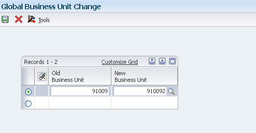

In the example above, all object account numbers in company 91009 will change from 1101 to 1121.
*1 Company and Subsidiary
| Purpose |
| Overview |
| Scope |
| Details |
| Tables Affected by Account Structure Revisions |
| Changing a Business Unit on Multiple Accounts (P09812) |
| Overview of Functionality |
| Reviewing Global Business Unit Update Application |
| Changing Accounts By Object Account (P09803) |
| Overview of Functionality |
| Reviewing Global Account Number Update Application |
| Changing Accounts By Subsidiary (P09805) |
| Overview of Functionality |
| Reviewing Global Subsidiary Update Application |
| Running the Update BU.Obj.Sub to Journal Entry Program (R09806) |
| Overview of Functionality |
| Setup |
| Reviewing the Report |
| After Completing the R09806 in Final Mode |
| Other Global Update Programs |
| Frequently Asked Questions |
If your company has recently expanded or merged with another company, or a management decision has been made to change financial reporting, you might need to change the company account structures in the chart of accounts. This task might involve:
In addition to changing the structure of your accounts, you can also run programs that:
This document is intended for Finance Functional users who will be reviewing and modifying the organization and account structures.
The following general ledger tables are affected by changes to account numbers:
You can change the business unit portion of the account number on many accounts at once by globally changing the business units. For example, you can change business unit 91009 to business unit 910092 for all object and object.subsidiary accounts. To change the business unit on multiple accounts, the current business unit and the future business unit must exist in the Business Unit Master (F0006) table and must belong to the same company. If they do not, the system displays the company for the old business unit and for the new one, but it does not update them.
Run the P09812 application to change business unit for multiple accounts. Enter the number of the old business unit that you want to change and the number of the new business unit. The new business unit must exist in the F0006 table. The Global Business Unit Change interactive program (P09812) internally submits Global Business Unit Change report (R09812) which updates the F0901 table for each account. The R09812 report does not produce any output.

In the example above, all object and object.subsidiary accounts belonging to the same company will change from business unit 91009 to business unit 910092.
You can globally change multiple object account numbers. For example, you can change object account 1101 to 1121 across all business units in company 91009. When you globally change object account numbers, the old object account must already exist, and the new object account cannot exist in the system.
Run the P09803 application to change object accounts for one company or for all companies. If you need to change the object account for more than one company (but not all companies), you must run the P09803 program for each company. The Global Account Number Change interactive program (P09803) internally submits Global Account Number Update report (R09803) which updates the F0901 table for each account. The R09803 report does not produce any output.
In the example above, all object account numbers in company 91009 will change from 1101 to 1121.
*1 Company and Subsidiary
*2 Old Object and New Object
You can globally change a subsidiary for multiple accounts. For example, you might change the subsidiary portion of account 1110.BEAR i.e. BEAR to 2220 for data entry efficiency. This global change affects all of the companies for object account 1110 only.
When you restructure your accounts, you can change subsidiaries within a company, within an object range, or both. If you need to do this restructuring for selected companies or object account ranges, you must change the subsidiary for each company or object account range.
If you globally change a subsidiary, the old subsidiary must already exist and the new subsidiary cannot exist in the system.
Run the P09805 application to change Subsidiary for multiple accounts. The P09805 application internally submits Global Subsidiary Update report (R09805) which updates the F0901 table. The R09805 report does not produce any output.

In the example above, the account 1110.BEAR will change to 1110.2220. This change will only affect company 91009 and object account 1110.
*1 Company, Object From, and Object Thru
*2 Old and New Subsidiary
After you change business units, object account numbers, or subsidiaries, you must update the F0911 and F0902 tables with the revised information by running the Update BU.Obj.Sub to Journal Entry program (R09806).
When an account is created, each account is assigned a unique Short Account ID. The account ID is used to maintain an audit trail of account ledger transactions and balances. When making account structure changes, you can change the business unit.object.subsidiary for an account, but you cannot change the account ID. When an account structure is changed in the Account Master table (F0901), the historical records in the F0911 and F0902 tables need to be updated using the R09806 program. The Update BU.OBJ.SUB program (R09806) uses the Short Account ID to bridge the new account structure to the historical transactional data stored in the F0911 and F0902 tables. This program compares the business unit, object, and subsidiary for each account ID in the F0911 and F0902 tables to the account master records in the F0901 table and updates the F0911 and F0902 tables, based on the F0901 table.
For example: The object account is changed in the F0901 using Change Object Accounts (P09803):
| Business Unit | Object Account | Subsidiary | Short Account ID | |
|---|---|---|---|---|
| Before Change | 91009 | 1110 | BEAR | 00349296 |
| After Change | 91009 | 1105 | BEAR | 00349296 |
Please note that the object account number changed, but the Short Account ID value remained constant.
Since the R09806 has not been run, F0902 and F0911 tables will reflect the original account number (and also the Short Account ID which remained constant). Since the Short Account ID remains constant, R09806 uses Short Account ID to identify prior balances and transaction detail residing in the F0902 and F0911 tables and updates them with the new object account number
Processing Options
Print Tab - Print Report
Mode Tab - Process Mode
Data Selection
It is recommended to run the R09806 report for all companies. For example, in case of Object Account/Subsidiary revisions, it would be required to update multiple accounts pertaining to different companies. You may further specify Business Unit, Object Account or Subsidiary but please ensure to provide the latest value after revision. For example,

When run in detailed mode, R09806 report will print before and after image for Business Unit, Object Account, and Subsidiary fields for F0911 and F0902 files, sorted by Account ID. In the given example, it shows
*1 existing value of Business Unit 91009 for transactions in F0911 and F0902 tables getting updated to 910092.
*2 existing value of Object Account 1101 for transactions in F0911 and F0902 tables getting updated to 1121.
*3 existing value of Subsidiary BEAR for transactions in F0911 and F0902 tables getting updated to 2220.
After you run Update BU.Obj.Sub to Journal Entry program (R09806), ensure to complete following tasks:
In addition to the global updates available for changing the structure of your accounts, the following is a list of additional global updates.
| Program Name | Description | KM Document |
|---|---|---|
| Change Company Number on a Business Unit (R097041/R097031/R097021) | To move an existing business unit to a different company. | Change Company Number on a Business Unit (R097041/R097031/R097021) |
| Change Account Information (R09813) | Change Account information such as account description or posting edit code for several accounts at one time. | Change Account Information (R09813) |
| Update the Model/ Consolidated Field (R0006QD) | Change Model/Consolidation field for Business Units in Account Master. | Update the Model/ Consolidated Field (R0006QD) |
| Business Unit Global Cateogry Codes Update F0101>F0006 (R098021) | Update Category Codes information for Business Units. | Business Unit Global Cateogry Codes Update F0101>F0006 (R098021) |
Question 1: While changing a business unit on multiple accounts via P09812 program, will it create duplicate accounts in case an account already exists?
Answer 1: Accounts that already exist in the new business unit are not updated with the new business unit number because this action would cause duplicate accounts. For example, if you are renumbering business unit 1 to business unit 10, and account 10.1110.BEAR already exists in the F0901 table, the system does not update account 1.1110.BEAR to business unit 10.
Question 2: Can I merge two or more accounts/account ids into one account and account id?
Answer 2: Two account ids cannot be merged into one. You may consider possible workarounds:
Question 3: What could cause the R09806 to not produce any output and end in an error status when run in application releases 9.1 and 9.2?
Answer 3: One possible cause of this is that there are new fields added to F03B117 (Revenue Recognition GL Info) by ESUs JM21779 (9.1) and JN13395 (9.2). These ESUs have special instructions that result in the new fields added to F03B117. If these fields are not in the table when R09806 is run then the UBE will not finish and will go to error status.